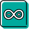

Aizuchable / アイズッチャブル
タイトルの由来 : aizuchi able ＝相槌ができる
サービス / UX / プロダクト デザイン
課題設定
「コミュニケーションのためのプロダクト」
制作期間
5週間（授業課題）/ 2020
使用したソフトウェア
Visual Studio Code (JavaScript) / Arduino / Photoshop / Illustrator / Premiere Pro

- 


相槌が伝わらない
チャットなどのオンライン上のコミュニケーションでは、相槌は伝りません。
相槌を打つ側は普段、顔や動作に自然とでているものが文字にして打たなければ伝わらないという手間がかかり、話し手側は自分の話がきちんと伝わっているのか不安になります。
作品説明
アイズッチャブルは、相槌を打つ人のパソコンやスマートフォンのインカメラで顔の表情を認識し、話し手側に振動にして伝えるというサービスを提供します。
五感の内、触覚にして相槌を伝えられれば、画面を見て話に集中しつつ、皮膚からの刺激を認識ができると考え、振動にして相槌を伝えることを考えました。振動は手首に装着した専用バングルに伝わります。
相槌の種類
まず、相槌は大きく分けて以下の４種類が重要になると考えました。①から④までの４種類の相槌は頻繁に行われるものだと考えられるので、感覚的にわかりやすい、単純な振動の種類にしました。
例えば①の軽いうなずきは、振動も小さめに一回ブルンと震え、④の笑ったときは笑っている間だけ小さく揺れが続きます。
また、特に話に対して③の疑問を持たれたときは、話を進めていく際に最も重要なので最優先にし、大きく少し不快感のある振動を伝えます。
① 軽いうなずき
② 大きなうなずき(理解)
③ 疑問に感じたとき
④ 笑ったとき
以下の３種類は感覚的にわかる振動ではありませんが、振動の種類を覚えればより多くの相槌を受け取れるようになっています。
⑤ 退屈なとき
⑥ しかめ面なとき
⑦ 驚いたとき
プロセス
まず、顔認識のJavaScriptのライブラリを使い、うなずく動作や首を傾げた時、笑った表情や、話が難しくて顔をしかめた時など、合計７種類の相槌を検出するプログラムを書きました。
これはコードの一部です。
首を傾けたときに生じる鼻根の角度ののずれや、顔をしかめた時の目と眉毛の間の距離、眠くて欠伸をした時に何秒間大きく口が開いたかなどを判断基準とし、細かく正確に相槌を分ける基準を作りました。
また、相槌を打つ側のパソコンやスマートフォンのインカメラから相槌が処理され種類が判別されると、数字のみがサーバーに送信されるので、サーバーへの負荷は少なくてすみます。
顔を検出した時はこのような様子になります。
笑った時に赤丸の中の数字が①から④になり、笑顔が検出されたことがわかります。
（実際のサービス利用時には、この画面は邪魔になってしまうのでプログラム動作の確認用です。）
そして検出した結果はNode.jsを使って、話し手側のパソコンへ送られます。
（顔認識をスマートフォンで試そうとしましたが、セキュリティが厳しく今回は二つのデバイスを使ってのモックはできず、一台のパソコンで全て試しました。）
話し手側のパソコンで検出結果をサーバーから受信し、Arduinoを用いて振動にして伝えました。目障り、耳障りにならない触覚的なアプローチ、つまり振動にすることで、画面を見て話をしながら自然と相槌の振動を受けとることができます。
腕に装着するバングルには３つの振動モーターが搭載されています。
それぞれ強さや振動のタイミングを変えて、7つの相槌にあった振動を探していきました。
アイズッチャブルで相槌を伝えて、快適なオンラインでのコミュニケーションを！